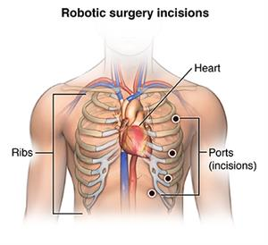

Ce este chirurgia cardiacă asistată de robot?
Chirurgia cardiacă asistată de robot este o intervenție chirurgicală pe inimă realizată prin tăieturi (incizii) foarte mici în piept. Chirurgii folosesc instrumente minuscule și instrumente controlate de robot pentru a efectua intervenții chirurgicale pe inimă într-un mod mult mai puțin invaziv decât operația pe cord deschis. Această intervenție chirurgicală este adesea numită chirurgie cardiacă robotică.

Intervențiile chirurgicale asistate de robot au fost folosite pentru multe proceduri diferite legate de inimă. Acestea includ chirurgia valvulară, bypass-ul coronarian, ablația țesutului cardiac, repararea defectelor cardiace și îndepărtarea tumorii.
De ce aș putea avea nevoie de o intervenție chirurgicală cardiacă asistată de robot?
Principalul beneficiu al chirurgiei cardiace asistate de robot este că este mai puțin invazivă în comparație cu operația pe cord deschis. Inciziile mai mici pot însemna că puteți petrece mai puțin timp în spital, vă puteți vindeca mai repede și puteți reveni la activități mai rapid.
Doctorul dumneavoastră va determina dacă operația cardiacă asistată de robot este potrivită pentru dvs. Această intervenție este recomandată dacă:
- Repararea sau înlocuirea valvele cardiace rigide sau cu scurgeri
- Corectarea fibrilației atriale, un tip comun de aritmie
- Îndepărtarea unei tumori din inimă
- Tratarea afecțiunilor cardiace congenitale
- Bypass-ul arterelor blocate
Care sunt riscurile operației cardiace asistate de robot?
Unul dintre principalele beneficii ale chirurgiei cardiace asistate de robot este că are mai puține riscuri decât operația pe cord deschis. Chirurgul nu trebuie să taie sternul pentru a vă deschide pieptul. Acest lucru elimină multe dintre complicațiile intervenției chirurgicale pe cord deschis. Chirurgia cardiacă asistată de robot necesită încă anestezie. Ca și în cazul oricărui tip de intervenție chirurgicală, există întotdeauna riscuri, precum:
- Atac de cord
- Accident cerebral vascular
- Sângerare
- Probleme legate de utilzarea anesteziei
- Aritmii, inclusiv necesitatea unui stimulator cardiac permnanent
- Infecții
- Deces
Ce se întâmplă în timpul operației cardiace asistate de robot?
Un cadru medical vă va anestezia înainte de începerea procedurii. Acest lucru vă va face să dormiți profund și să nu simțiți durere în timpul intervenției chirurgicale. Este posibil să primiți un sedativ înainte de procedură pentru a vă ajuta să vă relaxați. Odată ce adormi, un tub de respirație va fi introdus prin gât în plămâni. Veți fi conectat la o mașină (ventilator) care va respira pentru dvs. în timpul intervenției chirurgicale. Un chirurg va face o serie de tăieturi de mărimea unei chei pe partea laterală a pieptului. Aceste tăieturi se vor alinia cu deschiderile dintre coaste. Poate fi necesar să fiți plasat pe aparatul inimă-plămân pentru procedură. În funcție de procedura efectuată, chirurgul dumneavoastră va introduce mai multe brațe robotizate ghidate de precizie în aceste incizii. Aceste brațe robotizate țin și manipulează instrumente minuscule pentru a îndeplini sarcinile necesare asupra inimii sau arterelor din jur. O cameră video mică va fi introdusă într-o altă incizie. Aceasta va oferi o imagine 3D mărită a locului de operare. Chirurgul va controla brațele robotice și camera de la o consolă din sala de operație. Odată terminat, chirurgul va îndepărta instrumentele și va închide inciziile.